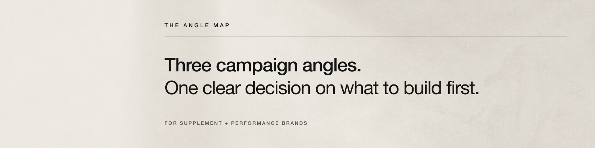

Direction 01 · incumbent
Commissioned Decision Object
A strategist who turns a noisy evidence pile into a calm, commissioned decision artifact.

- Borrow
- Decisive hierarchy, paper tactility, legible productization.
- Reject
- Corporate consultancy and anonymous template shop.
- Risk
- The work becomes more memorable than the person.
- Test
- Can a buyer repeat “three angles, one first move” after three seconds?